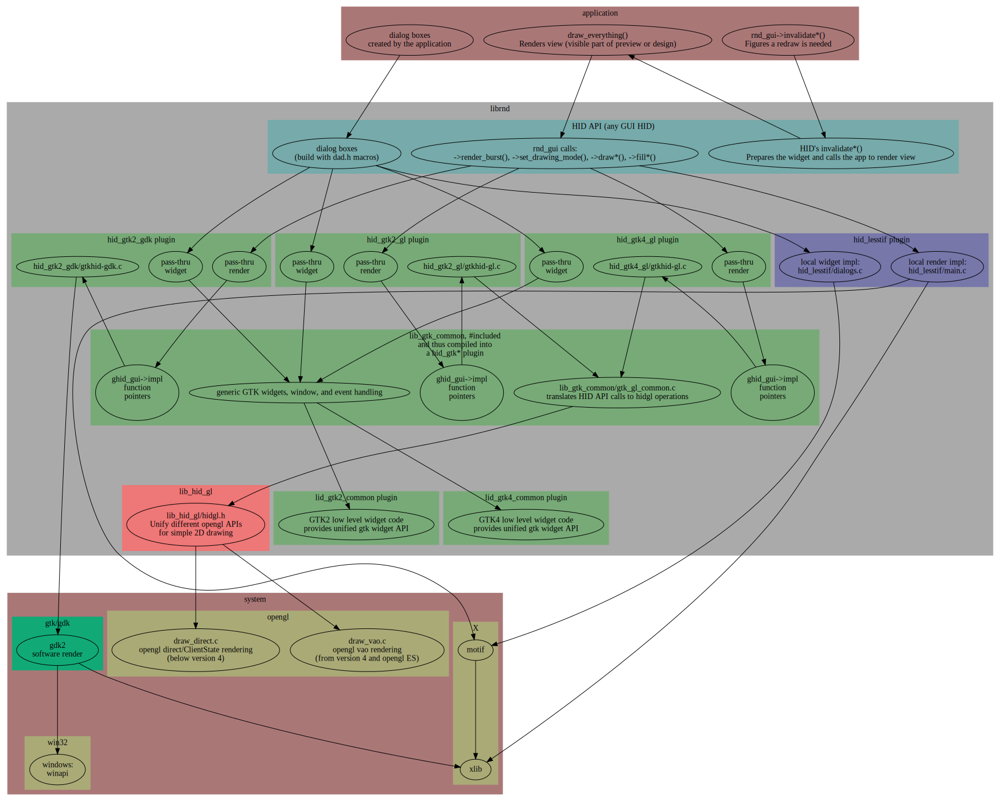

librnd rendering paths

Dialog boxes
Dialog boxes are typically created by the application. There are a few
of them created by librnd. Every dialog box is created using the DAD
(Dynamic Attribute Dialog) API of librnd, in librnd/core/dad.h.
The DAD API provides a limited, but portable set of abstract widgets
that can be created regardless of which GUI HID will render them. The DAD
API also provides callbacks for the to application dialog box code to
handle interaction.
On the above drawing:
- a dialog box is created and ran (popped up) using the DAD API, typically by the application
- all DAD API calls go through the HID API to the currently active GUI (rnd_gui)
- in gtk HIDs the actual HID code passes the call through to lib_gtk_common; lesstif directly create the widgets using motif in this step
- lib_gtk_common builds the gtk widgets using either lib_gtk2_common or lib_gtk4_common
lib_gtk2_common and lib_gtk4_common are thin layers offering an unified
API to different gtk versions.
Rendering
Drawings in the top window and preview widgets are rendered as follows:
- the application calls rnd_gui->invalidate()*; this typically happens upon user input, e.g. if the drawing has changed
- rnd_gui is handled by one of the GUI HID plugins (e.g. hid_gtk2_gl); the GUI HID prepares the widget for drawing and calls the application to perform the drawing
- the application draws the portion requested by the HID; in pcb-rnd the function that does this is called draw_everything(); the application uses rnd_gui-> function pointers for drawing objects
- in case of a gtk HID, the call is passed through to lib_gtk_common ghid_gui struct; in case of hid_lesstif, the drawing is performed using xlib calls
- lib_gtk_common ghid_gui struct is an unified API to the caller but doesn't implement the actual drawing but function pointers to them; the functions are implemented in the specific gtk HIDs...
- ...for example in hid_gtk2_gl/gtkhid_gl; in hid_gtk2_gdk this layer implements drawing using gdk calls; in hid_gtk*_gl, this layer does a minimal setup and calls through to gtk_gl_common.c that implements the high level translation from librnd drawing operations to opengl drawing operations
- next step is lib_hid_gl/hidgl.h, which calls through to one of the low level opengl implementations depending on opengl version
In the gtk stack most of the code is done in lib_gtk_common. The role of
a specific hid plugin (e.g. hid_gtk2_gl) is to pick the relevant parts from
lib_gtk_common and lib_hid_gl, glue them together and dispatch.
In case of gtk gl rendering, the high level rendering is done in
gtk_gl_common.c. This translates librnd's model (mainly GCs and colors) to
the opengl model. This layer also glues the generic opengl API to librnd
drawing API. This layer knows a lot of librnd objects and a little of
opengl primitives and states.
lib_hid_gl is the generic, low level opengl API. The purpose of this
plugin is dual:
- to provide an API for any HID that wants to render to opengl, so
the given HID doesn't need to reinvent things like "how to convert
a librnd round cap line into opengl polygons"
- to hide differences between different opengl versions, allowing the
gl based HIDs to run on anything from mid 2000s to latest opengl or
opengl ES.
The lib_hid_gl layer knows a lot about opengl states and primitives and
has very little idea about librnd drawing model. However, indirectly it
has a lot to do with librnd: the calls it provides are designed to
be useful for implementing what librnd rendering API needs. Thus it has a
limited API to a subset of opengl.